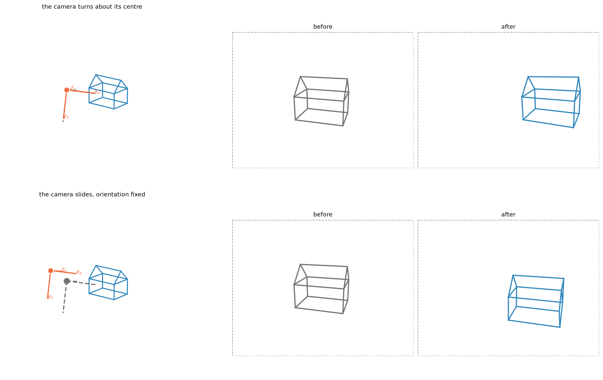

In this notebook we will build a geometric model of a photograph as a projection from three-dimensional projective space to the image plane,
\[
\mathbb P^3 \dashrightarrow \mathbb P^2 .
\]
A real camera forms an image through a much richer physical process. Light passes through a system of lenses, reaches a sensor, and is eventually converted into an array of pixel values. We will leave all of this aside for now — aperture, focus, exposure, sensor response, demosaicing, and even lens distortion — and concentrate on the geometry of image formation alone.
That geometry is much older than photography. Its roots reach back to ancient optics, and during the Renaissance the same ideas became the basis of linear perspective: a systematic way of representing a three-dimensional scene on a two-dimensional surface. Leon Battista Alberti described an image as an intersegazione della piramide visiva — a cross-section of the visual pyramid.
We will take that construction as our starting point: choose a centre of projection, join it to the points of the scene, and intersect the resulting visual rays with an image plane.
From there we will gradually build the pinhole camera model. Homogeneous coordinates will let us encode the entire projection in a single \(3\times4\) matrix,
\[
\mathbf x \sim \mathsf P\,\mathbf X ,
\]
defined up to an arbitrary non-zero scale and therefore carrying eleven degrees of freedom.
Before looking at the matrix, however, let us look at the geometry.
The visual pyramid
Let us start with the collection of 3D points \(\{\mathbf{X}_i\}\) that represents the Origami House, and add a centre of projection\(\mathbf{C}\): Alberti’s eye, or the optical centre of our ideal camera.
Join \(\mathbf{C}\) to all the points of the scene. The resulting family of concurrent lines is the visual pyramid: every scene point \(\mathbf X_i\) determines a visual ray through the centre.
To make an image, we intersect these rays with a plane \(\phi\). The image point \(\mathbf x_i\) is simply where the ray through \(\mathbf X_i\) meets that plane:
Point by point, the three-dimensional scene is cut by the image plane into a two-dimensional picture: Alberti’s intersegazione della piramide visiva.
Figure 1: Alberti’s visual pyramid, with the Origami House standing in for his scene. Left: the centre of projection (orange dot), the rays joining it to the vertices (grey), and the house (blue). Right: the marks left where those rays cross an interposed plane, which is the image.
From the visual pyramid to coordinates
To turn the intersection of the visual pyramid into equations, let us choose a coordinate system.
Place its origin at the centre of projection \(\mathbf C\). Let the \(z_c\)-axis be perpendicular to the image plane, and let the \(x_c\)- and \(y_c\)-axes span directions parallel to it. If the image plane lies at distance \(f\) from the centre, its equation is simply
\[
z_c=f .
\]
Consider now a scene point \(\mathbf{X}_c=(X_c,Y_c,Z_c)^\top\). The visual ray joining \(\mathbf C\) to \(\mathbf{X}_c\) meets the image plane at \(\mathbf{x}=(x,y,f)^\top\), and similar triangles in the two coordinate planes give the coordinates of that intersection:
Figure 2: The camera reference frame and the two planar sections behind central projection. Left: the scene point \(\mathbf{X}_c\) (blue), its visual ray, and the image point \(\mathbf{x}\) where the ray meets the plane \(\phi\) at \(z_c=f\). Centre and right: the sections in the \(x_cz_c\)- and \(y_cz_c\)-planes, in which the projection equations are two similar triangles.
Depth changes apparent size
The division by \(Z_c\) is not just an algebraic detail: it is responsible for one of the most familiar effects of perspective.
Take two identical Origami Houses and place them side by side, but push one farther away along the optical axis. Their metric size is exactly the same; only their position in space differs. Since the projection divides by depth, the farther house is divided by a larger number and therefore occupies a smaller region of the image.
Figure 3: Two identical Origami Houses at different depths, the near one solid and the far one faded. Left: in space, where they are the same size. Right: their images, where the farther copy is smaller. Nothing has been scaled; the shrinking is entirely the division by \(Z_c\).
The same factor \(1/Z_c\) that produces this familiar effect also makes the projection nonlinear in Cartesian coordinates. Can we describe the same geometry with a linear map?
One extra coordinate makes projection linear
The geometric construction of perspective is centuries older than its modern algebraic language. In the nineteenth century August Ferdinand Möbius and Julius Plücker introduced homogeneous coordinates for projective geometry, and they provide exactly what we need here.
Instead of representing the scene point by three Cartesian coordinates, write it as \(\mathbf X=(X_c,Y_c,Z_c,1)^\top\) and its image as \(\mathbf x=(x,y,1)^\top\). Now consider the \(3\times4\) matrix
The division by depth has not disappeared. Homogeneous coordinates have simply postponed it: the projection itself is linear, and the division reappears only when we choose the representative whose last coordinate is \(1\).
The one point with no image
The matrix \(\mathsf P_f\) is \(3\times4\), so it has a non-trivial null space, and it is worth asking what lives there. A vector in the kernel is mapped to \(\mathbf 0\), which is not a point of \(\mathbb P^2\) — so a point of the kernel has no image at all.
For \(\mathsf P_f\) the kernel is spanned by \((0,0,0,1)^\top\): the origin of the camera frame, which is the centre of projection itself. That is exactly right. Every other point of space determines a visual ray, but the centre determines no direction, and a camera cannot photograph its own centre.
This is the algebraic shadow of a geometric fact, and it holds for any camera matrix: the centre is the right null space of \(\mathsf P\).
f_demo =1.4P_f = np.array([[f_demo, 0.0, 0.0, 0.0], [0.0, f_demo, 0.0, 0.0], [0.0, 0.0, 1.0, 0.0]])C_h = np.linalg.svd(P_f)[2][-1] # the right null vectorC_h = C_h / np.abs(C_h).max()print("null vector of P_f:", C_h.round(6))print("its image P_f C :", (P_f @ C_h).round(12)," <- not a point of P^2")print("\nin Cartesian terms this is the origin of the camera frame,")print("that is, the centre of projection itself.")
null vector of P_f: [0. 0. 0. 1.]
its image P_f C : [0. 0. 0.] <- not a point of P^2
in Cartesian terms this is the origin of the camera frame,
that is, the centre of projection itself.
Putting the camera in the world
So far we have made a very convenient choice: the coordinate system was attached to the camera. The centre of projection was the origin, the \(z_c\)-axis was the optical axis, and the image plane was simply \(z_c=f\).
But the scene does not have to be described in camera coordinates. For the Origami House it is more natural to attach a world reference frame to the house itself: origin at a corner of the base, \(x_w\) running along its width, \(y_w\) along its depth, and \(z_w\) pointing vertically upward.
A scene point is then described by its world coordinates \(\mathbf X_w=(X_w,Y_w,Z_w)^\top\), and before projecting it we only need to express the same point in the camera frame. Note the phrasing: the point does not move. Only its description changes.
Figure 4: One point, two descriptions. The world frame (dark) is attached to the Origami House; the camera frame (orange) sits at the centre of projection with \(z_c\) along the optical axis. The highlighted vertex is a single point of space: the dashed dark segments give its world coordinates, the dashed orange ray its position as seen from the camera. Passing from one description to the other is the rigid transformation \([\mathsf R\mid \mathbf t]\).
The change of coordinates from the world frame to the camera frame is a rigid transformation,
Here \(\mathsf R\) describes the orientation of the world frame as seen by the camera, while \(\mathbf t\) describes its translation in camera coordinates.
If the camera centre has world coordinates \(\mathbf C\), then
\[
\mathbf{X}_c
=
\mathsf R(\mathbf X_w-\mathbf C)
=
\mathsf R\mathbf X_w-\mathsf R\mathbf C ,
\]
so that
\[
\mathbf t=-\mathsf R\mathbf C .
\]
The vector \(\mathbf t\) is therefore not the position of the camera in the world frame. That position is \(\mathbf C\). Mixing up the two is one of the most reliable ways to spend an afternoon.
key = IDS[len(IDS)//2]Xw_pt = X[index[key]]Xc_pt = R @ Xw_pt + tprint(f"the vertex {key}")print(f" in world coordinates : {Xw_pt}")print(f" in camera coordinates: {Xc_pt}")print(f" distance from C : {np.linalg.norm(Xw_pt - C):.4f} cm")print(f" norm of X_c : {np.linalg.norm(Xc_pt):.4f} cm ""<- the same, as it must be for a rigid motion\n")print(f"camera centre C : {C}")print(f"translation t : {t}")print(f"-R^T t recovers C: {-R.T @ t}")
the vertex X5
in world coordinates : [5. 0. 2.5]
in camera coordinates: [ 1.9189 0.0977 14.7159]
distance from C : 14.8408 cm
norm of X_c : 14.8408 cm <- the same, as it must be for a rigid motion
camera centre C : [ 7. -14. 7.]
translation t : [-2.8891 2.0721 16.7738]
-R^T t recovers C: [ 7. -14. 7.]
Projection is now the composition of two maps, \(\mathbf X_w \to \mathbf X_c \to \mathbf x\), that is
The pair \((\mathsf R,\mathbf t)\) tells us where the camera is and how it is oriented with respect to the scene. These are the extrinsic parameters.
Seeing the extrinsics
Two experiments make the roles of \(\mathsf R\) and \(\mathbf t\) visible. In both the house stays exactly where it is; only the camera is touched.
First rotate the camera about its own centre. The optical centre does not move, so \(\mathbf C\) is unchanged — yet \(\mathbf t=-\mathsf R\mathbf C\) changes, which is the clearest possible demonstration that \(\mathbf t\) is not a position.
Then translate the camera, keeping its orientation. Now \(\mathsf R\) is unchanged and the whole apparatus slides sideways.

Figure 5: The two extrinsic motions, with the original camera drawn in grey and the modified one in orange, and the house fixed in its world frame. Top: the camera turns about its own centre; the two frames share an origin and differ only in orientation. Bottom: the camera slides, keeping its orientation; the two frames are parallel and their origins differ. The images on the right are what each camera records, drawn inside the same image rectangle (dashed), so a part of the house leaving that rectangle has simply left the field of view.
print(f"{'':22s}{'centre C':>34s}{'translation t':>34s}")for name, R_, C_ in [("original", R, C), ("rotated about C", R_rot, C), ("translated", R, C_tr)]:print(f"{name:22s}{str(C_.round(3)):>34s}{str((-R_ @ C_).round(3)):>34s}")print("\nthe rotated camera has exactly the same centre as the original,")print("and a different t: the translation vector follows the orientation.")
centre C translation t
original [ 7. -14. 7.] [-2.889 2.072 16.774]
rotated about C [ 7. -14. 7.] [ 1.551 2.072 16.95 ]
translated [ 4. -14. 8.] [-0.004 3.273 16.288]
the rotated camera has exactly the same centre as the original,
and a different t: the translation vector follows the orientation.
From the image plane to pixels
So far we have treated the image as a continuous geometric plane. That is the setting of Alberti’s construction: each visual ray meets the image plane at a point with continuous coordinates.
A digital image is different. It is a rectangular grid of samples indexed by a column \(u\) and a row \(v\), with the origin conventionally at the upper-left corner, as for the entries of an array. We therefore need one more change of coordinates, from geometric coordinates on the image plane to pixel coordinates.
Suppose distances in the camera frame are measured in centimetres, so that \(x\) and \(y\) are centimetres on the image plane. Pixels are not centimetres: if one pixel has physical width \(p_x\) and height \(p_y\), a distance on the sensor is converted into pixels by dividing by those quantities. This is why the focal length appears in pixel coordinates as
so that \(f_x\) and \(f_y\) are the focal length expressed in pixels rather than in physical units.
It is convenient to reorganise the construction slightly. Instead of first projecting onto the physical plane \(z_c=f\), intersect the visual ray with the plane \(z_c=1\). This gives the normalised image coordinates
\[
\mathbf x_n=(X_c/Z_c,\;Y_c/Z_c,\;1)^\top .
\]
The plane \(z_c=1\) is only a convenient reference. We have not moved the sensor, nor set the physical focal length to one. We have simply factored the projection into two steps — 3D point, then normalised image, then pixel — with the second step carrying the focal length, the conversion to pixels, and the choice of image coordinate system.
The intrinsics
In homogeneous coordinates that second step is written \(\mathbf x\sim\mathsf
K\,\mathbf x_n\), with
\(f_x\) and \(f_y\) express the focal length in pixel units;
\((c_x,c_y)\) is the principal point, the pixel at which the optical axis meets the image plane;
\(s\) accounts for a possible skew between the two pixel axes, and is zero for any sensor that has not been resampled.
The matrix \(\mathsf K\) describes how the geometry of the ideal camera is encoded in the coordinate system of the digital image. Its entries are the intrinsic parameters.
Two of them can be understood by going back to the pyramid and moving the plane.
Figure 6: Slicing the same visual pyramid at three distances. Left: the centre and the rays are untouched; only the image plane moves along the optical axis. Right: what each plane records, drawn inside the same image rectangle. A longer focal length magnifies the picture and narrows the field of view, but it does not change the pyramid: no new information about the scene has been gathered.
Figure 7: The principal point, with the focal length fixed. The orange cross marks \((c_x,c_y)\), where the optical axis meets the sensor. Changing it slides the picture inside the image rectangle without altering its shape: the principal point is a property of how the sensor is placed and cropped, not of the pyramid. This is why a cropped photograph has a principal point away from the centre of its raster.
with the calibration transformation gives \(\lambda\mathbf x=\mathsf K[\mathsf I\mid\mathbf 0]\mathbf{X}_c\), and if the scene is expressed in world coordinates,
The two factors have different roles: \(\mathsf K\) describes the internal geometry of the camera, while \(\mathsf R\) and \(\mathbf t\) describe its pose in the world. Counting parameters, five for \(\mathsf K\) and six for the pose makes eleven, which is exactly the number of degrees of freedom of a \(3\times4\) matrix defined up to scale.
Figure 8: The same house at the four stages of the chain. Top left: the world frame, with the camera drawn where it sits and three rays showing what it is looking at. Top right: after the rigid motion, the identical object in the camera’s own frame — nothing projected yet, only relabelled. Bottom left: after the interception, in normalised coordinates, whose units are dimensionless ratios. Bottom right: after \(\mathsf{K}\), in pixels, which is what a sensor reports.
Back-projecting a pixel
The model can also be read backwards, and the reading is short.
Applying \(\mathsf K^{-1}\) to a pixel \(\mathbf x=(u,v,1)^\top\) strips off the image coordinate system and returns the direction of the corresponding visual ray in the camera frame,
So the extrinsics contribute two different things: \(\mathbf C\) says where the ray starts, \(\mathsf R\) says which way it points. And calibration turns a pixel into a direction — not into a point. Where the scene lies along the ray is exactly the information the projection destroyed, and no amount of calibration will bring it back.
A useful consequence is that a calibrated camera measures angles. The angle between the rays of two pixels is
and the pose never enters, because a rotation does not change angles.
def backproject(pixels, K, R, t):"""World-frame origin and unit directions of the rays of a set of pixels.""" x_h = np.c_[np.asarray(pixels, float), np.ones(len(pixels))] d_c = (np.linalg.inv(K) @ x_h.T).T d_w = (R.T @ d_c.T).Treturn-R.T @ t, d_w / np.linalg.norm(d_w, axis=1, keepdims=True)picked = [IDS[0], IDS[len(IDS)//2], IDS[-1]]pix = xy[[index[k] for k in picked]]origin, dirs = backproject(pix, K, R, t)print("each ray passes through the vertex that produced it:")for k, d inzip(picked, dirs): v = X[index[k]] - origin gap = np.linalg.norm(v - (v @ d) * d) # distance from vertex to rayprint(f" {k}: {gap:.2e} cm off the ray")d1 = np.linalg.solve(K, np.append(pix[0], 1.0))d2 = np.linalg.solve(K, np.append(pix[-1], 1.0))cos = d1 @ d2 / (np.linalg.norm(d1) * np.linalg.norm(d2))print(f"\nangle between the first and last ray, from the pixels alone: "f"{np.degrees(np.arccos(np.clip(cos, -1, 1))):.4f} deg")
each ray passes through the vertex that produced it:
X0: 4.78e-15 cm off the ray
X5: 1.99e-15 cm off the ray
X9: 1.78e-15 cm off the ray
angle between the first and last ray, from the pixels alone: 23.3516 deg
Figure 9: The model running backwards. Left: three chosen pixels in the digital image. Right: the rays they define in the world, drawn from the camera centre and continued a little past the house, following \(\mathbf{X}_w(\mu)=\mathbf{C}+\mu\,\mathsf{R}^\top\mathsf{K}^{-1}\mathbf{x}\). Each ray meets the vertex that produced the pixel, but calibration alone does not say where along the ray that vertex lies.
If only the matrix \(\mathsf P\) is known, the ray can still be recovered, but it comes out as a projective line rather than as a Euclidean ray with an origin and a direction.
The centre is the right null space, \(\mathsf P\mathbf C=\mathbf 0\). The pseudoinverse supplies one preimage of the pixel, \(\mathbf X_0=\mathsf
P^{+}\mathbf x\), and since adding any multiple of the centre leaves the image unchanged, the full back-projection is the line
\[
\mathbf X\sim\alpha\,\mathsf P^{+}\mathbf x+\beta\,\mathbf C .
\]
The pseudoinverse is not an inverse camera: it picks one point on the line, and the null space supplies the rest.
Reading the camera back out of \(\mathsf P\)
Sometimes we are given only the \(3\times4\) matrix. Its geometry can be read back out. The camera centre is the right null vector, because the optical centre has no image. If the world frame is Euclidean and the matrix really represents a finite pinhole camera, the left \(3\times3\) block factorises by an RQ decomposition,
\[
\mathsf M=\mathsf K\mathsf R ,
\]
recovering intrinsics and rotation up to the usual sign conventions; then \(\mathbf t\) follows from the fourth column. With \(K_{33}=1\), \(K_{11},K_{22}>0\) and \(\det\mathsf R=1\) the factorisation is unique.
RQ is not a calibration algorithm: it only decomposes the matrix it is given. If \(\mathsf P\) has been estimated poorly, its factors will be poor as well. Calibration procedures estimate the camera while enforcing its structure during the estimation, and using many measurements.
def rq3(A):"""RQ decomposition A = R_upper @ Q_orthogonal, built from NumPy's QR.""" Q, R_up = np.linalg.qr(np.flipud(A).T)return np.fliplr(np.flipud(R_up.T)), np.flipud(Q.T)def decompose_projection_matrix(Pm):"""Recover K, R, t from a finite Euclidean camera matrix.""" Pw = np.asarray(Pm, float).copy()if np.linalg.det(Pw[:, :3]) <0: Pw =-Pw K_hat, R_hat = rq3(Pw[:, :3]) signs = np.sign(np.diag(K_hat)); signs[signs ==0] =1.0 D = np.diag(signs) K_hat, R_hat = K_hat @ D, D @ R_hat K_hat, Pw = K_hat / K_hat[2, 2], Pw / K_hat[2, 2]return K_hat, R_hat, np.linalg.solve(K_hat, Pw[:, 3])# The centre, from P alone: no Euclidean assumption is used here.M, p4 = P[:, :3], P[:, 3]C_from_P =-np.linalg.solve(M, p4)print(f"centre from P, error against the true one: "f"{np.max(np.abs(C_from_P - C)):.2e} cm")K_hat, R_hat, t_hat = decompose_projection_matrix(P)print(f"\nRQ on an exact P: |K-K_hat| = {np.max(np.abs(K_hat - K)):.2e} "f"|R-R_hat| = {np.max(np.abs(R_hat - R)):.2e} "f"|t-t_hat| = {np.max(np.abs(t_hat - t)):.2e}")
centre from P, error against the true one: 1.42e-14 cm
RQ on an exact P: |K-K_hat| = 1.28e-13 |R-R_hat| = 3.33e-16 |t-t_hat| = 2.22e-15
Further reading
Hartley, R. and Zisserman, A. Multiple View Geometry in Computer Vision, 2nd ed., Cambridge University Press, 2004. Chapter 6 for the projective camera and its decomposition.
Fusiello, A. Visione Computazionale: tecniche di ricostruzione tridimensionale, Franco Angeli, 2018, for a geometric treatment of perspective cameras and projective coordinates.
Alberti, L. B. De pictura / Della pittura, 1435–36, for the visual pyramid and the velo. Cecil Grayson’s is the standard critical edition.
Andersen, K. The Geometry of an Art, Springer, 2007, for the historical development of mathematical perspective.